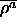

Select the ARTMAP learning function ARTMAP from the menu of the learning functions. Specify the three parameters

, and in the LEARN row of the control panel. Example values could
be 0.7, 1.0, 1.0, and 0.0.
in the LEARN row of the control panel. Example values could
be 0.7, 1.0, 1.0, and 0.0.  is the initial vigilance
parameter for the ART -part of the net, which may be modified by the
Match-Tracking-Mechanism.
is the initial vigilance
parameter for the ART -part of the net, which may be modified by the
Match-Tracking-Mechanism.  is the vigilance parameter for the
ART
is the vigilance parameter for the
ART -part and is the one for the Inter-ART-Reset control.
-part and is the one for the Inter-ART-Reset control.